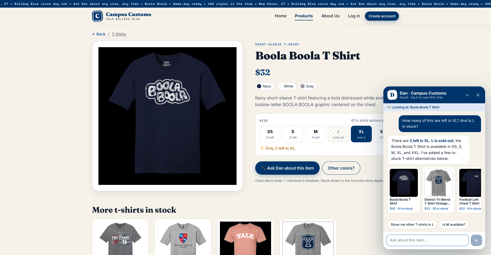
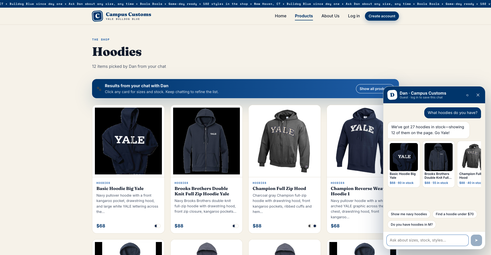
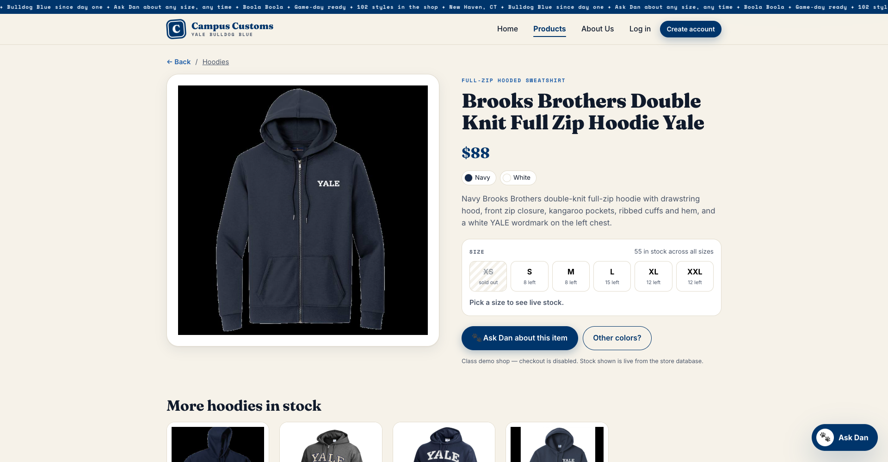
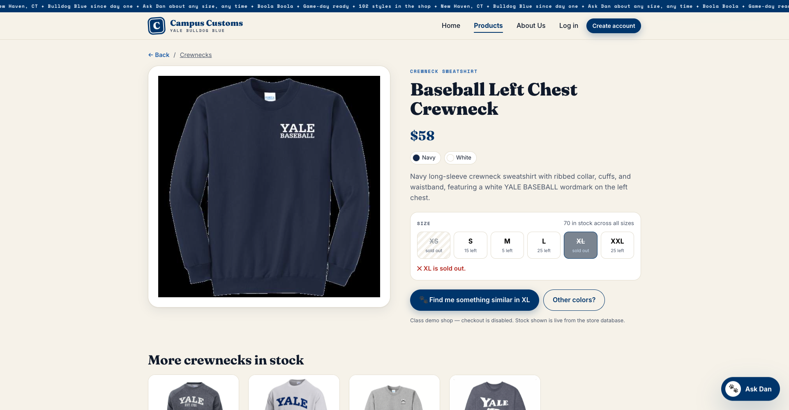
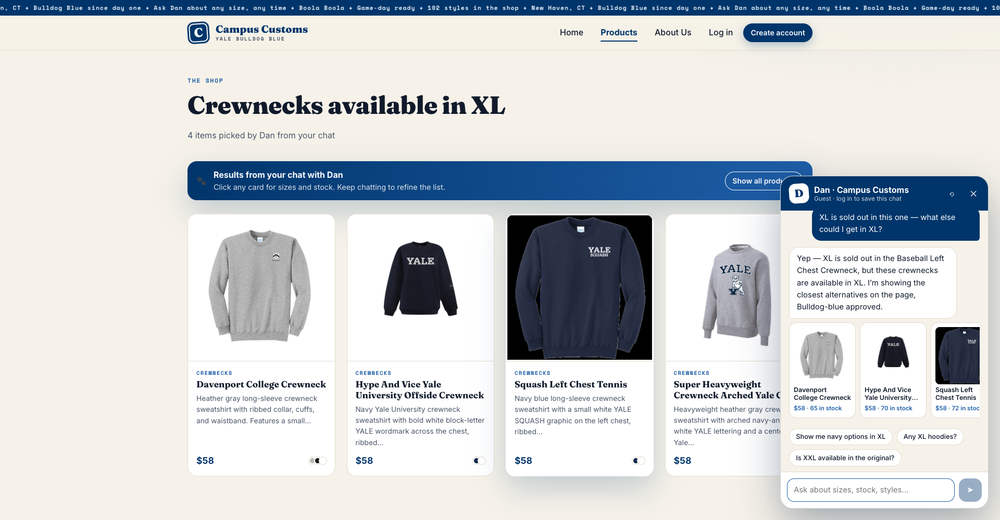
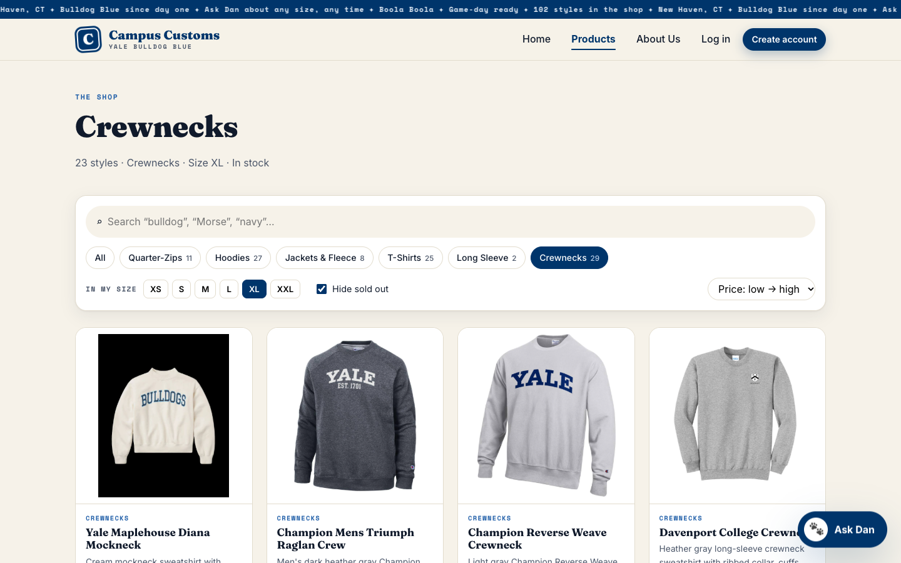
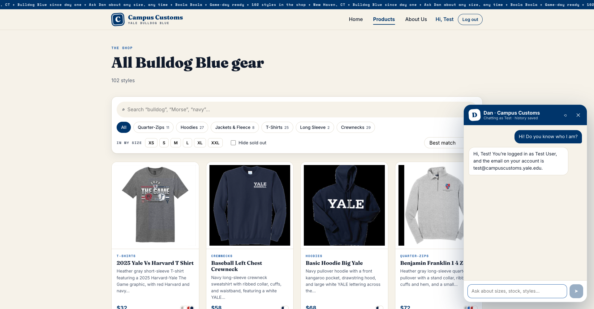

Campus Customs — app check
Problem 11 · screenshots of the running site (React on :5173, FastAPI + agent on :8000, model gpt-5.6-luna via Portkey), captured 2026-09-29. Each check has a heading, a screenshot and what it proves.
Chat checks the inventory level of an item
On the Boola Boola T Shirt page, a guest asks: “How many of this are left in XL? And is L in stock?” The shopper never names the product; Dan gets it from the page context.

Database at the time of the screenshot:
$ sqlite3 data/campus_customs.db "SELECT size, quantity FROM inventory WHERE product_id='boola-boola-t-shirt'" XS|12 S|12 M|15 L|0 XL|2 XXL|20 (price in catalogue: 32.0)
Proves: the agent called check_stock on the product in view and
reported the exact DB quantity (2) and an honest “sold out” for L (0). Nothing was invented. The price on
the card ($32) also matches the catalogue.
Dynamic search-result cards after a category question
From the home page, a guest asks “What hoodies do you have?”.

show_on_page = true, search_label = "Hoodies" and 12
product ids. The site switches to the Products page, shows the “Results from your chat with Dan” banner
and renders those cards (image, name, price, short description). Dan says “27 hoodies in stock — showing 12”
because the search tool reports total_matches.
Proves: the structured API contract works end to end. The agent picks the ids, the backend builds the cards from SQLite, the front end renders them on the page, and every card still links to its detail view.
Usability features from Problem 9
a) Live-stock size picker + “Find me something similar” (front end #2) → find_alternatives tool (agent #3)


find_alternatives and returns similar crewnecks that
are in stock in XL, same category and price. The results appear on the page as “Crewnecks available in XL”.Proves: a sold-out size turns into a way to another sale instead of a dead end. The shopper sees availability before asking, and the alternatives come from the database.
b) Smart filter bar (front end #1)

/products?category=Crewnecks&size=XL&in_stock=1&sort=price_asc: category chip,
“In my size = XL” (only items with XL stock > 0), “Hide sold out” and price sort. The header reads
“23 styles · Crewnecks · Size XL · In stock”, and the filters live in the URL so the view can be shared.Proves: shoppers can narrow 102 styles to what's actually available in their size in one or two taps.
Saved chat history for a logged-in shopper (Problem 8)

chat_messages table.